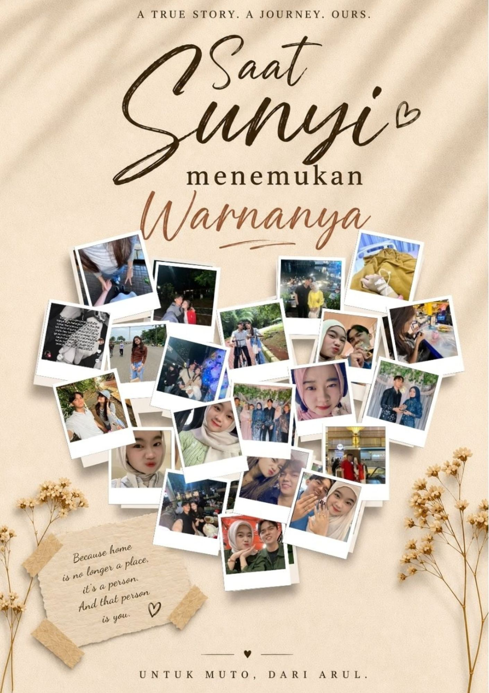
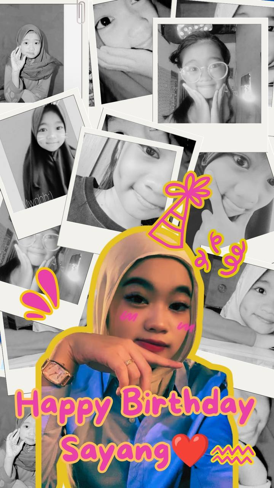

Our Story: The Novel
Tentang Kita, Selamanya
A story written by Syahrul Ramadhan for sayangkuu
Untuk sayangkuu, ada sebuah kisah yang ingin Syahrul Ramadhan rayakan malam ini…
Sebuah perjalanan kecil, sebuah buku, dan banyak doa yang ditulis dengan sepenuh hati.
Bab utama · sebuah buku untuk kita
Buka setiap halaman perlahan. Ini adalah mesin waktu yang aku tulis untuk sayangkuu.❤️

Our Story: The Novel
A story written by Syahrul Ramadhan for sayangkuu
Dari Arul, untuk Muto
Bukan karena satu momen saja, melainkan karena setiap langkah kecil yang membuat dunia Arul terasa pulang.
01 / 07
Muto melangkah ke dunia Arul yang dulu tenang, sunyi, dan nyaris tanpa warna—lalu membuat hari-hari itu terasa lebih hidup.
02 / 07
Energi positifmu, tawa, dan caramu hadir dengan hangat membuat hari yang datar terasa jauh lebih hidup.
03 / 07
Di Blok M, saat Arul masih gugup dan banyak diam, kamu mengambil inisiatif dengan pertanyaan-pertanyaan sederhana yang mencairkan segalanya.
04 / 07
Kehadiranmu tidak pernah terasa mengganggu dunia Arul. Justru bersamamu, ia bisa tertawa, mencoba hal baru, dan tak lagi takut terlihat konyol.
05 / 07
Dari “Talk to me”, Blok M, Gandaria, hingga gerimis Bundaran HI—setiap tempat menyimpan jejak tawa dan keberanian yang kita bagi.
06 / 07
Sejak mengenalmu, Arul punya alasan yang lebih jelas untuk melangkah, bekerja lebih keras, dan memantaskan diri bagi masa depan yang dibayangkan bersama.
07 / 07
Dari keberanian kecil hingga lamaran 17 Maret 2026, Muto menjadi pelabuhan yang membuat Arul merasa utuh, cukup, dan ingin terus pulang.
Halaman kenangan
Placeholder kecil untuk foto-foto yang kelak ingin kita simpan bersama.

Sebuah senja untuk disimpan

Langkah kecil bersama

Malam yang hangat

Tawa yang selalu hidup

Langit yang pernah kita bagi

Bunga kecil untuk sayangkuu
Surat kecil
Untuk sayangkuu,
Selamat ulang tahun, sayangku ❤️Hari ini adalah hari yang sangat istimewa buatku, karena di hari inilah seseorang yang begitu berarti dalam hidupku dilahirkan. Seseorang yang sudah melewati begitu banyak hal dalam hidupnya untuk bisa sampai di titik ini.Aku tahu perjalananmu tidak selalu mudah. Ada banyak hal yang mungkin tidak semua orang tahu. Ada hari-hari ketika kamu harus terlihat kuat, padahal sebenarnya kamu sedang lelah. Ada air mata yang mungkin kamu sembunyikan, ada kekecewaan, kegagalan, masalah, dan berbagai keadaan yang pernah membuatmu merasa ingin menyerah.Tapi kamu tetap bertahan. Kamu tetap bangkit dan terus berjalan sampai hari ini.Dan aku ingin kamu tahu, aku bangga sama kamu.Aku mungkin tidak hadir di setiap bagian dari perjalananmu sejak awal. Aku tidak tahu semua hal yang pernah kamu lalui dan semua luka yang pernah kamu simpan sendiri. Tapi aku menghargai setiap perjuanganmu. Aku menghargai bagaimana kamu bisa tetap menjadi dirimu meskipun hidup pernah memberikanmu banyak alasan untuk menyerah.Terima kasih kepada dirimu yang dulu karena sudah bertahan sampai akhirnya aku bisa mengenal dan mencintai perempuan seperti kamu hari ini.Di ulang tahunmu ini, aku berdoa semoga Allah menyembuhkan semua luka yang masih tersisa, mengganti semua lelahmu dengan ketenangan, semua air matamu dengan kebahagiaan, dan semua perjuanganmu dengan sesuatu yang jauh lebih indah.Semoga Allah memberikanmu kesehatan, umur yang panjang dan penuh keberkahan, rezeki yang luas, hati yang tenang, serta kemudahan dalam setiap langkahmu. Semoga semua impian dan doa-doamu perlahan menjadi kenyataan.Kalau selama ini kamu terbiasa menghadapi banyak hal sendiri, semoga mulai sekarang kamu tahu bahwa ada aku yang ingin menemanimu. Aku ingin ada bukan hanya ketika kamu bahagia, tapi juga ketika kamu sedang lelah, sedih, kecewa, atau merasa dunia sedang terlalu berat.Aku ingin menjadi tempatmu bercerita, tempatmu bersandar, dan seseorang yang tetap menggenggam tanganmu ketika keadaan tidak mudah.Aku tidak bisa mengubah masa lalumu atau menghapus semua hal yang pernah membuatmu sakit. Tapi kalau Allah mengizinkan aku menjadi bagian dari masa depanmu, aku ingin membuat perjalananmu setelah ini lebih indah.Aku ingin menemanimu mengejar impian, mendukungmu dalam setiap langkah, dan merayakan setiap keberhasilanmu. Aku juga ingin kita belajar menghadapi setiap masalah bersama, bukan saling meninggalkan ketika keadaan sedang sulit.Aku memang tidak sempurna dan mungkin nantinya akan ada kesalahan yang aku lakukan. Tapi aku akan terus belajar menjadi pasangan yang bisa membuatmu merasa dicintai, dihargai, dijaga, dan tidak sendirian.Semoga suatu hari nanti kita bisa melihat kembali semua perjalanan yang sudah kita lewati, lalu tersenyum dan berkata, “Ternyata kita berhasil melewati semuanya.”Aku ingin merayakan lebih banyak ulang tahun bersamamu. Tahun depan, tahun-tahun berikutnya, sampai kita sama-sama tua nanti. Sampai rambut kita memutih dan kita masih bisa duduk berdua sambil mengingat semua cerita yang pernah kita lalui.Selamat ulang tahun, calon istriku sayang. ❤️Terima kasih sudah bertahan sampai sejauh ini. Terima kasih sudah hadir dalam hidupku. Dan terima kasih karena dari sekian panjang perjalanan hidupmu, Allah mempertemukan perjalananmu dengan perjalanan hidupku.Semoga setelah ini lebih banyak bahagia daripada sedih dalam hidupmu.Aku mencintaimu, hari ini, besok, dan sampai tua nanti. I LOVE YOU MORE, SAYANGKU 🤍🤍🤍🤍🤍
Semoga kita selalu diberi jalan untuk saling menjaga, tumbuh dalam kebaikan, dan melangkah dengan hati yang sama-sama tulus.
Dengan seluruh hati, Syahrul Ramadhan
Untuk hari yang paling manis

Untuk Muto, dari Arul
Selamat ulang tahun, sayangkuu. Semoga panjang umur, selalu diberi kesehatan, dan senantiasa dalam perlindungan Allah. Arul akan terus belajar membahagiakanmu dan menjaga hubungan kita dengan sepenuh hati. I love you, now, tomorrow, and forever.
Dengan seluruh hati, Arul
Setiap detik menuju 11 Oktober adalah alasan lain untuk bersyukur atas sayangkuu.
Untuk sayangkuu
Sayang,
Mari merayakan hari istimewa ini dengan doa, syukur, dan cinta yang selalu kita jaga.
I love you, now, tomorrow, and forever.
Satu kejutan terakhir
Aku tidak tahu seperti apa semua hari di depan kita…
Tapi aku tahu siapa yang ingin selalu ada di sisiku.
sayangkuu. ❤️
Selamat ulang tahun, sayangkuu. Semoga setiap langkahmu dijaga dalam kebaikan, setiap doamu menemukan jalannya, dan kisah kita selalu diberi ruang untuk tumbuh dengan sabar. — Syahrul Ramadhan